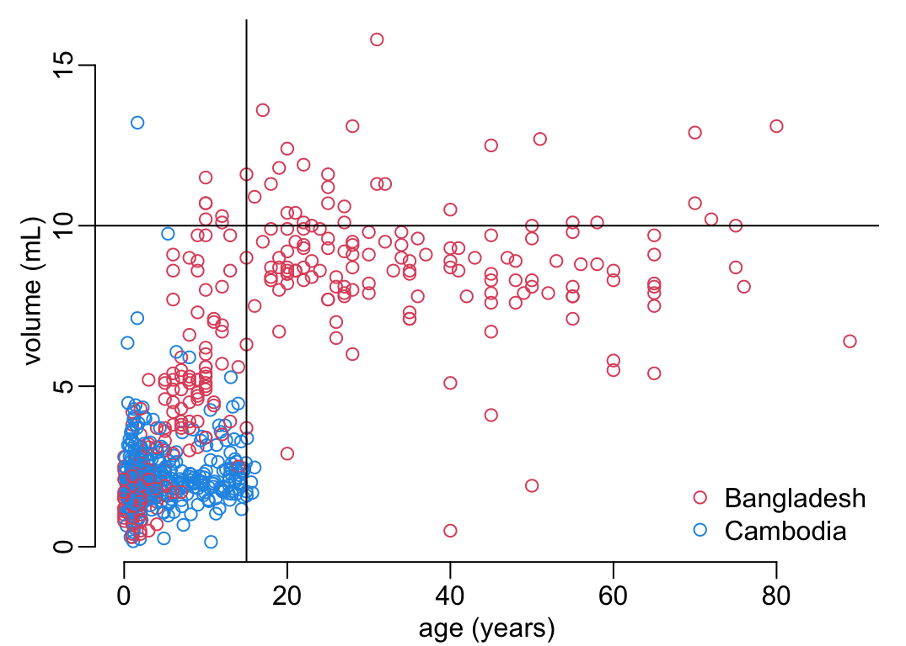
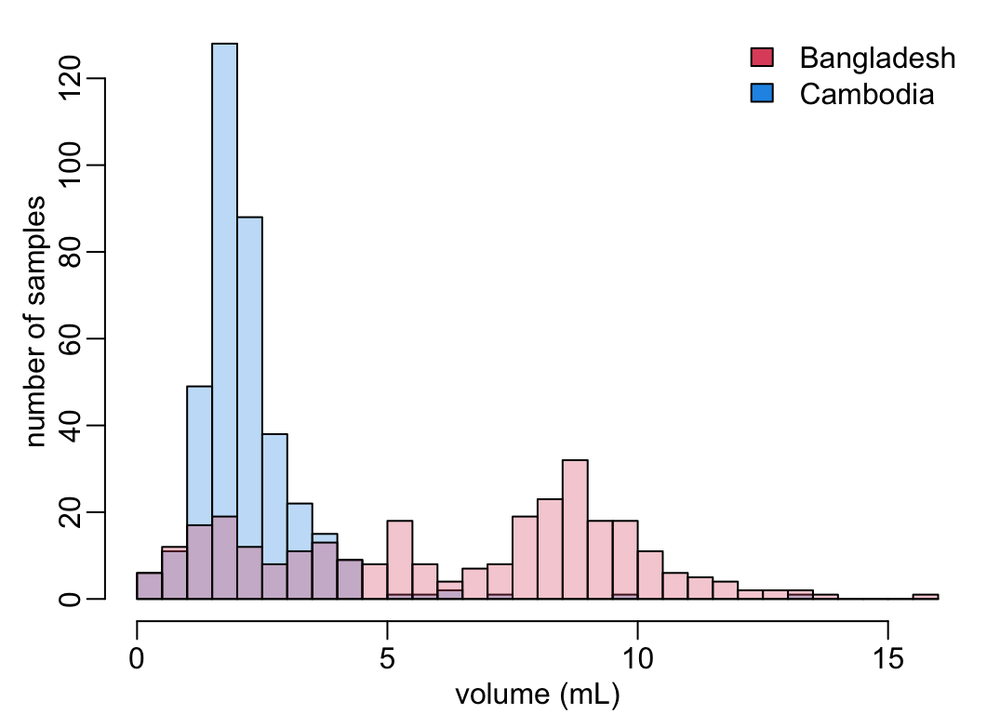

data_path <- paste0(Sys.getenv("HOME"), "/Library/CloudStorage/",
"OneDrive-OxfordUniversityClinicalResearchUnit/",
"GitHub/choisy/typhoid/")Blood volumes
Global parameters
The path to the data:
Packages
Required packages:
required_packages <- c("dplyr", "purrr", "tidyr", "stringr")Installing those that are not installed:
to_inst <- required_packages[! required_packages %in% installed.packages()[,"Package"]]
if (length(to_inst)) install.packages(to_inst)Loading some for interactive use:
library(dplyr)
library(purrr)
library(tidyr)
library(stringr)Utilitary functions
A function that reads a clean data set:
read_clean_data <- function(file) readRDS(paste0(data_path, "clean_data/", file))Blood volumes
Reading the data:
bv_bangladesh <- read_clean_data("bv_bangladesh.rds")
bv_cambodia <- read_clean_data("bv_cambodia.rds")Combining the data:
blood_volumes <- bind_rows(bv_bangladesh, bv_cambodia, .id = "country") |>
mutate(across(country, ~ c("Bangladesh", "Cambodia")[as.numeric(.x)]))The percentage of missing values per variable and country:
blood_volumes |>
group_by(country) |>
summarise(across(c(age, weight, volume), ~ sum(is.na(.x)) / length(.x)))# A tibble: 2 × 4
country age weight volume
<chr> <dbl> <dbl> <dbl>
1 Bangladesh 0.116 0.616 0.116
2 Cambodia 0 0.002 0.254Randomizing the rows of the dataframe:
blood_volumes_randomized <- blood_volumes[sample(nrow(blood_volumes)), ]The function that plot variables of the randomized dataframe:
colors <- c(2, 4)[factor(blood_volumes_randomized$country)]
units <- c(age = "(years)", weight = "(kg)", volume = "(mL)")
plot2 <- function(x, y, ...) {
x <- substitute(x)
y <- substitute(y)
x_val <- deparse(x)
y_val <- deparse(y)
plot(eval(x, blood_volumes_randomized),
eval(y, blood_volumes_randomized), col = colors,
xlab = paste(x_val, units[x_val]), ylab = paste(y_val, units[y_val]), ...)
legend("bottomright", pch = 1, col = c(2, 4), bty = "n",
legend = c("Bangladesh", "Cambodia"))
}Weight as a function of age:
plot2(age, weight)Volume as a function of age:
plot2(age, volume)
abline(v = 20)
Volume as a function of weight:
plot2(weight, volume)The distribution of ages in Cambodia and Bangladesh:
alpha <- .3
breaks <- 0:90
add_legend <- function() {
legend("topright", fill = c(2, 4), bty = "n",
legend = c("Bangladesh", "Cambodia"))
}
blood_volumes |>
filter(country == "Cambodia") |>
pull(age) |>
hist(breaks, main = NA, xlab = "age (years)", ylab = "number of samples",
col = adjustcolor(4, alpha))
blood_volumes |>
filter(country == "Bangladesh") |>
pull(age) |>
hist(breaks, col = adjustcolor(2, alpha), na.rm = TRUE, add = TRUE)
add_legend()The distribution of volume values in Cambodia and Bangladesh:
breaks <- seq(0, 16, .5)
blood_volumes |>
filter(country == "Cambodia") |>
pull(volume) |>
hist(breaks, main = NA, xlab = "volume (mL)", ylab = "number of samples",
col = adjustcolor(4, alpha))
blood_volumes |>
filter(country == "Bangladesh") |>
pull(volume) |>
hist(breaks, col = adjustcolor(2, alpha), na.rm = TRUE, add = TRUE)
add_legend()
Model:
model <- blood_volumes |>
filter(country == "Bangladesh") |>
select(-weight, -country) |>
na.exclude() |>
with(glm(culture ~ age * volume, binomial))
anova(model)Analysis of Deviance Table
Model: binomial, link: logit
Response: culture
Terms added sequentially (first to last)
Df Deviance Resid. Df Resid. Dev Pr(>Chi)
NULL 303 293.41
age 1 0.01174 302 293.39 0.91372
volume 1 2.80714 301 290.59 0.09385 .
age:volume 1 0.08565 300 290.50 0.76978
---
Signif. codes: 0 '***' 0.001 '**' 0.01 '*' 0.05 '.' 0.1 ' ' 1processed <- blood_volumes |>
filter(country == "Bangladesh") |>
select(volume, culture) |>
na.exclude() |>
mutate(vol_cat = cut(volume, quantile(volume, seq(0, 1, .1)),
include.lowest = TRUE)) |>
separate(vol_cat, c("vol_lower", "vol_upper"), ",") |>
mutate(across(starts_with("vol_"), ~ .x |>
str_remove("\\(|\\[|\\]") |>
as.numeric())) |>
rowwise() |>
mutate(vol_mean = mean(c(vol_lower, vol_upper))) |>
ungroup() |>
group_by(vol_mean) |>
mutate(prop = list(prop.test(sum(culture), length(culture))),
cult_est = map_dbl(prop, ~ .x$estimate),
confint = map(prop, ~ setNames(.x$conf.int,
c("cult_lower", "cult_upper")))) |>
unnest_wider(confint)A GAM model:
gam_model <- blood_volumes |>
filter(country == "Bangladesh") |>
select(volume, culture) |>
na.exclude() |>
with(mgcv::gam(culture ~ s(volume), binomial, method = "REML"))Making a figure out of these processed data:
with(processed, {
plot(NA, xlim = c(0, max(vol_upper)), ylim = c(0, max(cult_upper)),
xlab = "volume (mL)", ylab = "probability of culture positive")
arrows(vol_mean, cult_lower, vol_mean, cult_upper, .1, 90, 3, col = 2, lwd = 2)
points(vol_mean, cult_est, col = 2, pch = 19)
abline(v = unique(c(vol_lower, vol_upper)), lty = 2, col = "grey")
})
volume_vals <- seq(0, 16, le = 512)
gam_predictions <- predict(gam_model, list(volume = volume_vals),
type = "response", se = TRUE)
with(gam_predictions, {
polygon(c(volume_vals, rev(volume_vals)), border = NA, col = adjustcolor(4, .2),
c(fit - 1.96 * se.fit, rev(fit + 1.96 * se.fit)))
lines(volume_vals, fit, col = 4, lwd = 2)
})blood_volumes |>
filter(country == "Bangladesh") |>
select(age, culture)# A tibble: 344 × 2
age culture
<dbl> <lgl>
1 55 FALSE
2 20 FALSE
3 70 TRUE
4 31 FALSE
5 80 FALSE
6 16 FALSE
7 31 FALSE
8 34 FALSE
9 45 FALSE
10 89 FALSE
# ℹ 334 more rows